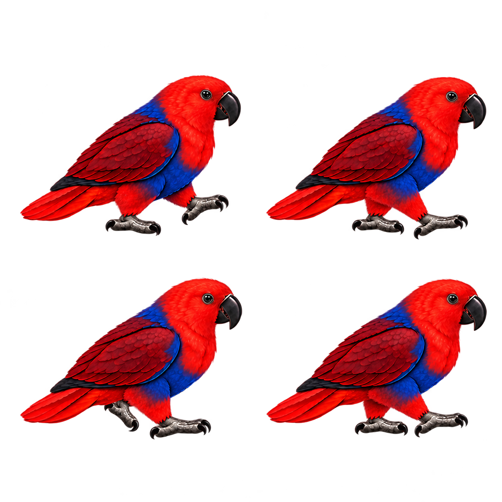

토마 보행 · 추가 시안
왼쪽은 기존 네 자세, 오른쪽은 새로 만든 네 자세입니다. 발을 번갈아 드는 흐름을 비교해 주세요.
천천히 보기
게임과 비슷한 크기로 렌더한 비교 영상입니다. 실제 휴대폰 플레이 녹화는 아닙니다.추가로 만든 자세

앞발 들기, 발 딛기, 뒷발 들기, 양발 지지 순서의 검수용 시안이에요.
아직 확인할 부분
프레임마다 눈·몸통과 발바닥 위치가 조금 달라요. 바닥을 딛는 발이 미끄러지지 않는지도 더 확인해야 합니다. 실제 앵무새 영상을 직접 재생하지 못해 영상과 일치한다고 단정하지 않았습니다. 실제 앵무새 행동 관찰 논문의 번갈아 걷는다는 설명을 참고했습니다.
이전 보행 시험판으로 돌아가기